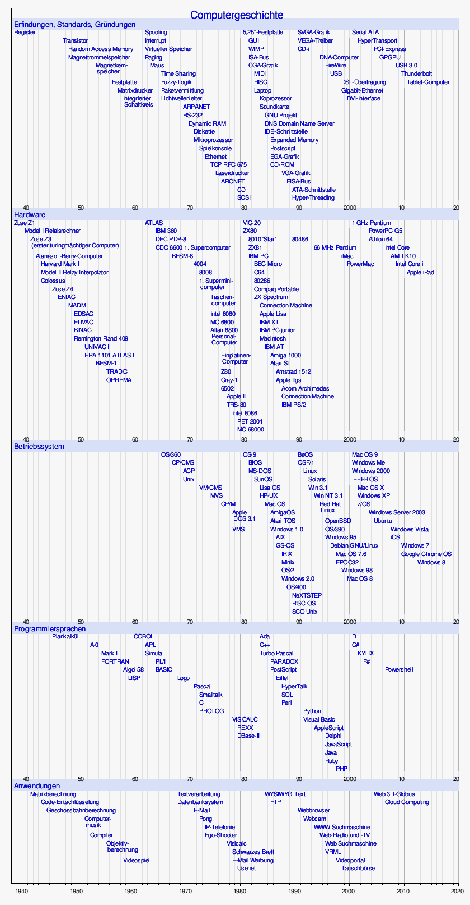

Geschichte
Die Vorläufer des modernen Computers
Die Computertechnologie entwickelte sich im Vergleich zu anderen Elektrogeräten sehr schnell.
Die Geschichte der Entwicklung des Computers reicht zurück bis in die Antike und ist damit wesentlich länger als die Geschichte der modernen Computertechnologien und mechanischen bzw. elektrischen Hilfsmitteln (Rechenmaschinen oder Hardware).
Sie umfasst dabei auch die Entwicklung von Rechenmethoden, die etwa für einfache Schreibgeräte auf Papier und Tafeln entwickelt wurden.
Im Folgenden wird entsprechend versucht, einen Überblick über diese Entwicklungen zu geben.
Zahlen als Grundlage der Computergeschichte
Das Konzept der Zahlen lässt sich auf keine konkreten Wurzeln zurückführen und hat sich wahrscheinlich mit den ersten Notwendigkeiten der Kommunikation zwischen zwei Individuen entwickelt.
Man findet in allen bekannten Sprachen mindestens für die Zahlen eins und zwei Entsprechungen.
Auch in der Kommunikation von vielen Tierarten (etwa verschiedener Primaten, aber auch Vögeln wie der Amsel) lässt sich die Möglichkeit der Unterscheidung unterschiedlicher Mengen von Gegenständen feststellen.
Die Weiterentwicklung dieser einfachen numerischen Systeme führte wahrscheinlich zur Entdeckung der ersten mathematischen Rechenoperation wie der Addition, der Subtraktion, der Multiplikation und der Division bzw. auch der Quadratzahlen und der Quadratwurzel.
Diese Operationen wurden formalisiert (in Formeln dargestellt) und dadurch überprüfbar.
Daraus entwickelten sich dann weiterführende Betrachtungen, etwa die von Euklid entwickelte Darstellung des größten gemeinsamen Teilers.
Im Mittelalter erreichte das Indische Zahlensystem über den arabischen Raum (deswegen fälschlicherweise als Arabisches Zahlensystem bekannt) Europa und erlaubte eine größere Systematisierung bei der Arbeit mit Zahlen.
Die Möglichkeiten erlaubten die Darstellung von Zahlen, Ausdrücke und Formeln auf Papier und die Tabellierung von mathematischen Funktionen wie etwa der Quadratwurzeln rsp. des einfachen Logarithmus sowie der Trigonometrie.
Zur Zeit der Arbeiten von Isaac Newton war Papier und Velin eine bedeutende Ressource für Rechenaufgaben und ist dies bis in die heutige Zeit geblieben, in der Forscher wie Enrico Fermi seitenweise Papier mit mathematischen Berechnungen füllten und Richard Feynman jeden mathematischen Schritt mit der Hand bis zur Lösung berechnete, obwohl es zu seiner Zeit bereits programmierbare Rechner gab.
20.Jahrhundert
1935 stellten IBM die IBM 601 vor, eine Lochkartenmaschine, die eine Multiplikation pro Sekunde durchführen konnte.
Es wurden ca. 1500 Exemplare verkauft. 1937 meldete Konrad Zuse zwei Patente an, die bereits alle Elemente der so genannten
Von-Neumann-Architektur beschreiben.
Im selben Jahr baute John Atanasoff zusammen mit dem Doktoranden Clifford Berry einen der ersten Digitalrechner, den Atanasoff-Berry-Computer und Alan Turing publizierte einen Artikel, der die Turing-Maschine, ein abstraktes Modell zur Definition des Algorithmusbegriffs, beschreibt.
1938 stellte Konrad Zuse die Zuse Z1 fertig, einen frei programmierbaren mechanischen Rechner, der allerdings aufgrund von Problemen mit der Fertigungspräzision nie voll funktionstüchtig war.
Die Z1 verfügte bereits über Gleitkommarechnung. Sie wurde im Krieg zerstört und später nach Originalplänen neu gefertigt, die Teile wurden auf modernen Fräs- und Drehbänken hergestellt.
Dieser Nachbau der Z1, welcher im Deutschen Technikmuseum in Berlin steht, ist mechanisch voll funktionsfähig und hat eine Rechengeschwindigkeit von 1 Hz, vollzieht also eine Rechenoperation pro Sekunde.
Ebenfalls 1938 publizierte Claude Shannon einen Artikel darüber, wie man symbolische Logik mit Relais implementieren kann. (Lit.: Shannon 1938)
Während des Zweiten Weltkrieges gab Alan Turing die entscheidenden Hinweise zur Entschlüsselung der ENIGMA-Codes und baute dafür einen speziellen mechanischen Rechner, Turing-Bombe genannt.
Entwicklung des modernen turingmächtigen Computers
Bis Ende des zweiten Weltkrieges
Ebenfalls im Krieg (1941) baute Konrad Zuse die erste funktionstüchtige programmgesteuerte binäre Rechenmaschine, bestehend aus einer großen Zahl von Relais, die Zuse Z3. Wie 1998 bewiesen werden konnte, war die Z3
turingmächtig und damit außerdem die erste Maschine, die – im Rahmen des verfügbaren Speicherplatzes – beliebige Algorithmen automatisch ausführen konnte.
Aufgrund dieser Eigenschaften wird sie oft als erster funktionsfähiger Computer der Geschichte betrachtet.
Die nächsten Digitalrechner waren der in den USA gebaute Atanasoff-Berry-Computer (Inbetriebnahme 1941) und die britische Colossus (1941).
Sie dienten speziellen Aufgaben und waren nicht turingmächtig. Auch Maschinen auf analoger Basis wurden entwickelt.
Auf das Jahr 1943 wird auch die angeblich von IBM-Chef Thomas J. Watson stammende Aussage „Ich glaube, es gibt einen weltweiten Bedarf an vielleicht fünf Computern.“ datiert.
Im selben Jahr stellte Tommy Flowers mit seinem Team in Bletchley Park den ersten „Colossus“ fertig.
1944 erfolgte die Fertigstellung des ASCC (Automatic Sequence Controlled Computer, „Mark I“ durch Howard H. Aiken) und das Team um Reinold Weber stellte eine Entschlüsselungsmaschine für das Verschlüsselungsgerät M-209 der US-Streitkräfte fertig.
Zuse hatte schließlich bis März 1945 seine am 21. Dezember 1943 bei einem Bombenangriff zerstörte Z3 durch die deutlich verbesserte Zuse Z4 ersetzt, dem damals einzigen turingmächtigen Computer in Europa, der von 1950 bis 1955 als zentraler Rechner der ETH Zürich genutzt wurde.
Eigenschaften der ersten Computer
Eigenschaften der ersten Computer
| Computer |
Land |
Inbetriebnahme |
Gleitkomma-
arithmetik |
Binär |
Elektronisch |
Programmierbar |
Turingmächtig |
| Zuse Z3 |
Deutschland |
Mai 1941 |
Ja |
Ja |
Nein |
Ja, durch Lochstreifen |
Ja |
| Atanasoff-Berry-Computer |
USA |
Sommer 1941 |
Nein |
Ja |
Ja |
Nein |
Nein |
| Colossus |
UK |
1943 |
Nein |
Ja |
Ja |
Teilweise, durch Neuverkabelung |
Nein |
| Mark I |
USA |
1944 |
Nein |
Nein |
Nein |
Ja, durch Lochstreifen |
Ja |
| Zuse Z4 |
Deutschland |
März 1945 |
Ja |
Ja |
Nein |
Ja, durch Lochstreifen |
Ja |
| ENIAC |
USA |
1946 |
Nein |
Nein |
Ja |
Teilweise, durch Neuverkabelung |
Ja |
| 1948 |
Nein |
Nein |
Ja |
Ja, durch eine Matrix aus Widerständen |
Ja |
Nachkriegszeit
Das Ende des Zweiten Weltkriegs erlaubte es, dass Europäer und Amerikaner von ihren Fortschritten gegenseitig wieder Kenntnis erlangten. 1946 wurde der Electronical Numerical Integrator and Computer (ENIAC) unter der Leitung von John Eckert und John Mauchly entwickelt.
ENIAC ist der erste vollelektronische digitale Universalrechner (Konrad Zuses Z3 verwendete 1941 noch Relais, war also nicht vollelektronisch). 1947 baute IBM den Selective Sequence Electronic Calculator (SSEC), einen Hybridcomputer mit Röhren und mechanischen Relais und die Association for Computing Machinery (ACM) wurde als erste wissenschaftliche Gesellschaft für Informatik gegründet.
Im gleichen Jahr wurde auch der erste Transistor realisiert, der heute aus der modernen Technik nicht mehr weggedacht werden kann. Die maßgeblich an der Erfindung beteiligten William B. Shockley, John Bardeen und Walter Brattain erhielten 1956 den Nobelpreis für Physik.
In die späten 1940er Jahre fällt auch der Bau des Electronic Discrete Variable Automatic Computer (EDVAC), der erstmals die Von-Neumann-Architektur implementierte.
1949 stellte Edmund C. Berkeley, Begründer der ACM, mit „Simon“ den ersten digitalen, programmierbaren Computer für den Heimgebrauch vor. Er bestand aus 50 Relais und wurde in Gestalt von Bauplänen vertrieben, von denen in den ersten zehn Jahren ihrer Verfügbarkeit über 400 Exemplare verkauft wurden.
Im selben Jahr stellte Maurice Wilkes mit seinem Team in Cambridge den Electronic Delay Storage Automatic Calculator (EDSAC) vor; basierend auf John von Neumanns EDVAC ist es der erste Rechner, der vollständig speicherprogrammierbar war.
Ebenfalls 1949 besichtigte Eduard Stiefel die in einem Pferdestall in Hopferau aufgestellte Zuse Z4 und finanzierte die gründliche Überholung der Maschine durch die Zuse KG bevor sie an die ETH Zürich ausgeliefert wurde und dort in Betrieb ging.
In den 1950er Jahren setzte die Produktion kommerzieller (Serien-)Computer ein. Unter der Leitung von Prof. Alwin Walther wurde am Institut für Praktische Mathematik (IPM) der TH Darmstadt ab 1951 der DERA (Darmstädter Elektronischer Rechenautomat) erbaut.
Remington Rand baute 1951 ihren ersten kommerziellen Röhrenrechner, den UNIVersal Automatic Computer I (UNIVAC I) und 1955 Bell Labs für die US Air Force mit dem TRansistorized Airborne DIgital Computer (TRADIC) den ersten Computer, der komplett mit Transistoren statt Röhren bestückt war; im gleichen Jahr begann Heinz Zemanek mit der Konstruktion des ersten auf europäischem Festland gebauten Transistorrechners, dem Mailüfterl.
Ebenfalls im gleichen Jahr baute die DDR mit der „OPtik-REchen-MAschine“ (OPREMA) ihren ersten Computer. 1956 nahm die ETH Zürich ihre ERMETH in Betrieb und IBM fertigte das erste Magnetplattensystem (Random Access Method of Accounting and Control (RAMAC)).
Ab 1958 wurde die Electrologica X1 als volltransistorisierter Serienrechner gebaut. Noch im selben Jahr stellte die Polnische Akademie der Wissenschaften in Zusammenarbeit mit dem Laboratorium für mathematische Apparate unter der Leitung von Romuald Marczynski den ersten polnischen Digital Computer „XYZ“ vor.
Vorgesehenes Einsatzgebiet war die Nuklearforschung. 1959 begann Siemens mit der Auslieferung des Siemens 2002, ihres ersten in Serie gefertigten und vollständig auf Basis von Transistoren hergestellten Computers.
1906 - 1990
1960
- 1960 baute IBM den IBM 1401, einen transistorisierten Rechner mit Magnetbandsystem, und DECs (Digital Equipment Corporation) erster Minicomputer, die PDP-1 (Programmierbarer Datenprozessor) erscheint.
1962 lieferte die Telefunken AG die ersten TR 4 aus.
1964 baute DEC den Minicomputer PDP-8 für unter 20.000 Dollar.
- 1964 definierte IBM die erste Computerarchitektur S/360, womit Rechner verschiedener Leistungsklassen denselben Code ausführen können und bei Texas Instruments wird der erste „integrierte Schaltkreis“ (IC) entwickelt.
1965 stellte das Moskauer Institut für Präzisionsmechanik und Computertechnologie unter der Leitung seines Chefentwicklers Sergej Lebedjew mit dem BESM-6 den ersten exportfähigen Großcomputer der UdSSR vor.
BESM-6 wurde ab 1967 mit Betriebssystem und Compiler ausgeliefert und bis 1987 gebaut.
1966 erschien dann auch noch mit D4a ein 33bit Auftischrechner der TU Dresden.
- 1968 bewarb Hewlett-Packard (HP) den HP-9100A in der Science-Ausgabe vom 4. Oktober 1968 als „personal computer“.
Die 1968 entstandene Nixdorf Computer AG erschloss zunächst in Deutschland und Europa, später auch in Nordamerika, einen neuen Computermarkt: die Mittlere Datentechnik bzw. die dezentrale elektronische Datenverarbeitung.
Massenhersteller wie IBM setzten weiterhin auf Großrechner und zentralisierte Datenverarbeitung, wobei Großrechner für kleine und mittlere Unternehmen schlicht zu teuer waren und die Großhersteller den Markt der Mittleren Datentechnik nicht bedienen konnten.
Nixdorf stieß in diese Marktnische mit dem modular aufgebauten Nixdorf 820 vor, brachte dadurch den Computer direkt an den Arbeitsplatz und ermöglichte kleinen und mittleren Betrieben die Nutzung der elektronischen Datenverarbeitung zu einem erschwinglichen Preis.
Im Dezember 1968 stellten Douglas C. Engelbart und William English vom Stanford Research Institute (SRI) die erste Computermaus vor, mangels sinnvoller Einsatzmöglichkeit (es gab noch keine grafischen Benutzeroberflächen) interessierte dies jedoch kaum jemanden.
1969 werden die ersten Computer per Internet verbunden.
1970
- Mit der Erfindung des serienmäßig produzierbaren Mikroprozessors wurden die Computer immer kleiner, leistungsfähiger und preisgünstiger.
Doch noch wurde das Potential der Computer verkannt. So sagte noch 1977 Ken Olson, Präsident und Gründer von DEC: „Es gibt keinen Grund, warum jemand einen Computer zu Hause haben wollte.“
- 1971 war es Intel, die mit dem 4004 den ersten in Serie gefertigten Mikroprozessor baute. Er bestand aus 2250 Transistoren.
1971 lieferte Telefunken den TR 440 an das Deutsche Rechenzentrum Darmstadt sowie an die Universitäten Bochum und München.
1972 ging der Illiac IV, ein Supercomputer mit Array-Prozessoren, in Betrieb.
1973 erschien mit Xerox Alto der erste Computer mit Maus, graphischer Benutzeroberfläche (GUI) und eingebauter Ethernet-Karte; und die französische Firma R2E begann mit der Auslieferung des Micral.
1974 stellte HP mit dem HP-65 den ersten programmierbaren Taschenrechner vor und Motorola baute den 6800-Prozessor, währenddessen Intel den 8080 Prozessor fertigte.
1975 begann MITS mit der Auslieferung des Altair 8800.
1975 stellte IBM mit der IBM 5100 den ersten tragbaren Computer vor.
Eine Wortlänge von 8 Bit und die Einengung der (schon existierenden) Bezeichnung Byte auf dieses Maß wurden in dieser Zeit geläufig.
- 1975 Maestro I (ursprünglich Programm-Entwicklungs-Terminal-System PET) von Softlab war weltweit die erste Integrierte Entwicklungsumgebung für Software.
Maestro I wurde weltweit 22.000-mal installiert, davon 6.000-mal in der Bundesrepublik Deutschland. Maestro I war in den 70er und 80er Jahren führend auf diesem Gebiet.
- 1976 stellte Apple Computer den Apple I vor und Zilog entwickelte den Z80-Prozessor.
1977 kamen der Apple II, der Commodore PET und der Tandy TRS 80 auf den Markt, 1978 die VAX-11/780 von DEC, eine Maschine speziell für virtuelle Speicheradressierung.
1979 schließlich startete Atari den Verkauf seiner Rechnermodelle 400 und 800. Revolutionär war bei diesen, dass mehrere ASIC-Chips den Hauptprozessor entlasteten.
1980
- Die 1980er waren die Blütezeit der Heimcomputer, zunächst mit 8-Bit-Mikroprozessoren und einem Arbeitsspeicher bis 64 KiB (Commodore VC20, C64, Sinclair ZX80/81, Sinclair ZX Spectrum, Schneider/Amstrad CPC 464/664, Atari XL/XE-Reihe), später auch leistungsfähigere Modelle mit 16-Bit- (Texas Instruments TI-99/4A) oder 16/32-Bit-Mikroprozessoren (z. B. Amiga, Atari ST).
Diese Entwicklung wurde durch IBM in Gang gesetzt, die 1981 den IBM-PC (Personal Computer) vorstellten und damit entscheidend die weitere Entwicklung bestimmten.
- 1982 brachte Intel den 80286-Prozessor auf den Markt und Sun Microsystems entwickelte die Sun-1 Workstation.
Nach dem ersten Büro-Computer mit Maus, Lisa, der 1983 auf den Markt kam, wurde 1984 der Apple Macintosh gebaut und setzte neue Maßstäbe für Benutzerfreundlichkeit.
Die Sowjetunion konterte mit ihrem „Kronos 1“, einer Bastelarbeit des Rechenzentrums in Akademgorodok.
Im Januar 1985 stellte Atari den ST-Computer auf der Consumer Electronics Show (CES) in Las Vegas vor. Im Juli produzierte Commodore den ersten Amiga-Heimcomputer.
In Sibirien wurde der „Kronos 2“ vorgestellt, der dann als „Kronos 2.6“ für vier Jahre in Serie ging.
1986 brachte Intel den 80386-Prozessor auf den Markt, 1989 den 80486.
Ebenfalls 1986 präsentierte Motorola den 68030-Prozessor. Im gleichen Jahr stellte Acorn den ARM2-Prozessor fertig und setze ihn im Folgejahr in Acorn-Archimedes-Rechnern ein.
1988 stellte NeXT mit Steve Jobs, Mitgründer von Apple, den gleichnamigen Computer vor.
- Die Computer-Fernvernetzung, deutsch „DFÜ“ (Datenfernübertragung), über das Usenet wurde an Universitäten und in diversen Firmen immer stärker benutzt.
Auch Privatleute strebten nun eine Vernetzung ihrer Computer an.
Mitte der 1980er Jahre entstanden Mailboxnetze, zusätzlich zum FidoNet das Z-Netz und das MausNet.
1990
- Die 1990er sind das Jahrzehnt des Internets und des World Wide Web. (Siehe auch Geschichte des Internets, Chronologie des Internets) 1991 spezifizierte das AIM-Konsortium (Apple, IBM, Motorola) die PowerPC-Plattform.
1992 stellte DEC die ersten Systeme mit dem 64-Bit-Alpha-Prozessor vor.
1993 brachte Intel den Pentium-Prozessor auf den Markt, 1995 den Pentium Pro.
1994 stellte Leonard Adleman mit dem TT-100 den ersten Prototypen für einen DNA-Computer vor, im Jahr darauf Be Incorporated die BeBox.
1999 baute Intel den Supercomputer ASCI Red mit 9.472 Prozessoren und AMD stellte mit dem Athlon den Nachfolger der K6-Prozessorfamilie vor.
Im 20. Jahrhundert
Zu Beginn des 21. Jahrhunderts sind Computer sowohl in beruflichen wie privaten Bereichen allgegenwärtig und allgemein akzeptiert.
Während die Leistungsfähigkeit in klassischen Anwendungsbereichen weiter gesteigert wird, werden digitale Rechner unter anderem in die Telekommunikation und Bildbearbeitung integriert.
2001 baute IBM den Supercomputer ASCI White, und 2002 ging der NEC Earth Simulator in Betrieb. 2003 lieferte Apple den PowerMac G5 aus, den ersten Computer mit 64-Bit-Prozessoren für den Massenmarkt.
AMD zog mit dem Opteron und dem Athlon 64 nach.
2005 produzierten AMD und Intel erste Dual-Core-Prozessoren, 2006 doppelte Intel mit den ersten Core-2-Quad-Prozessoren nach – AMD konnte erst 2007 erste Vierkernprozessoren vorstellen.
Bis zum Jahr 2010 stellten mehrere Firmen auch Sechs- und Achtkernprozessoren vor. Entwicklungen wie Mehrkernprozessoren, Berechnung auf Grafikprozessoren (GPGPU) sowie der breite Einsatz von Tablet-Computern dominieren in den letzten Jahren (Stand 2012) das Geschehen.
Seit den achtziger Jahren stiegen die Taktfrequenzen von anfangs wenigen MHz bis zuletzt (Stand 2013) etwa 4 GHz. In den letzten Jahren konnte der Takt nur noch wenig gesteigert werden, statt dessen wurden Steigerungen der Rechenleistung eher durch mehr Prozessorkerne und vergrößerte Busbreiten erzielt.
Seit ca. 2005 spielen auch Umweltaspekte (wie z. B. Stromsparfunktionen von Prozessor und Chipsatz, verringerter Einsatz schädlicher Stoffe) – bei der Produktion, Beschaffung und Nutzung von Computern zunehmend eine Rolle (siehe auch Green IT).
Was bring uns die Zukunft?
Zukünftige Entwicklungen bestehen voraussichtlich aus der möglichen Nutzung biologischer Systeme (Biocomputer), weiteren Verknüpfungen zwischen biologischer und technischer Informationsverarbeitung, optischer Signalverarbeitung und neuen physikalischen Modellen (Quantencomputer).
Auf der anderen Seite nimmt man langsam Abstand von nicht realisierten Trends der letzten 20 Jahre, Expertensysteme und Künstliche Intelligenzen, die ein Bewusstsein entwickeln, sich selbst verbessern oder gar rekonstruieren, zu erforschen.

Weltweite Marktanteile der Computerhersteller
Verkaufszahlen und Marktanteile der Computerhersteller nach Angaben des Marktforschungsunternehmens Gartner Inc., basierend auf Verkaufszahlen von Desktop-Computer, Notebooks, Netbooks aber ohne Tablet-Computer an Endkonsumenten:
| Rang |
Hersteller |
Verkaufszahlen 2011 |
Marktanteil 2011 |
Verkaufszahlen 2010 |
Marktanteil 2010 |
Verkaufszahlen 2009 |
Marktanteil 2009 |
| 1. |
Hewlett-Packard |
60.554.726 |
17,2 % |
62.741.274 |
17,9 % |
58.942.530 |
19,1 % |
| 2. |
Lenovo |
45.703.863 |
13,0 % |
38.180.444 |
10,9 % |
24.735.404 |
8,0 % |
| 3. |
Dell |
42.864.759 |
12,1 % |
42.119.272 |
12,0 % |
37.353.774 |
12,1 % |
| 4. |
Acer-Gruppe |
39.415.381 |
11,2 % |
48.758.542 |
13,9 % |
39.783.933 |
12,9 % |
| 5. |
Asus |
20.768.465 |
5,9 % |
18.902.723 |
5,4 % |
unter Sonstige |
unter Sonstige |
| 6. |
Toshiba |
unter Sonstige |
unter Sonstige |
19.011.752 |
5,4 % |
15.499.805 |
5,0 % |
|
Sonstige Hersteller |
143.499.792 |
40,6 % |
128.862.141 |
34,5 % |
132.026.226 |
42,9 % |
|
Insgesamt |
352.806.984 |
100 % |
350.900.332 |
100 % |
308.341.673 |
100 % |